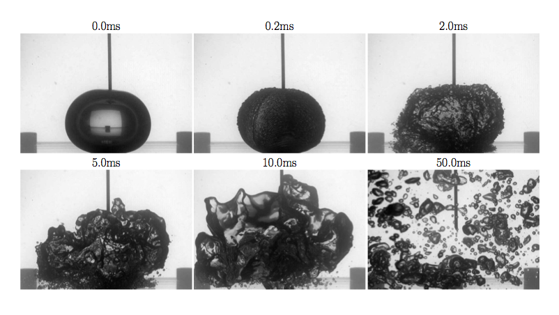
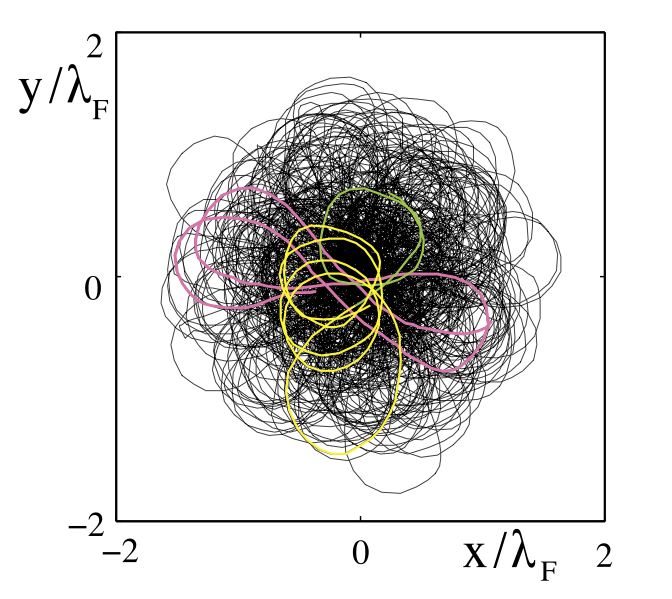
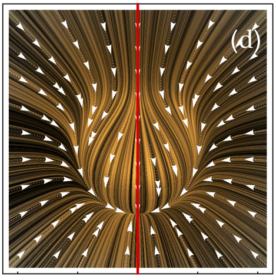
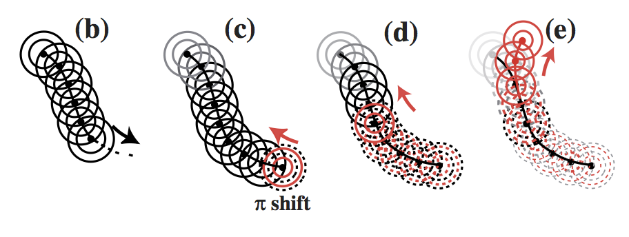
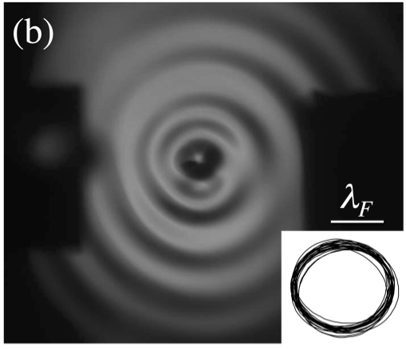
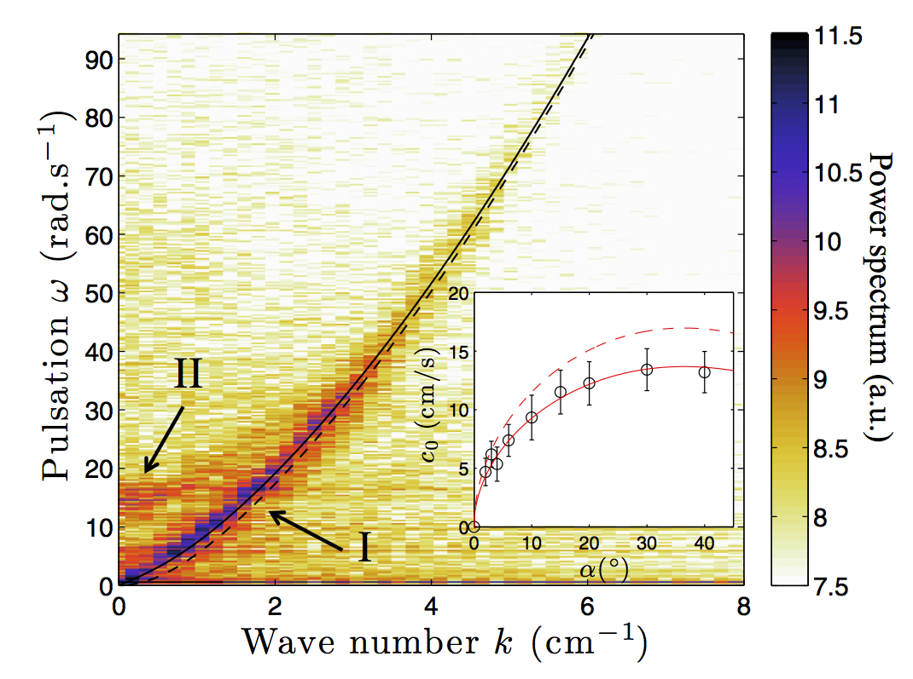

The breaking of an air bubble in a turbulent flow generally occurs above a critical bubble size called the Hinze scale, at which surface tension and inertial forces balance. What happens if a much large bubble than the Hinze scale is created? We investigate this highly non linear configuration by cracking air balloons in a jet generated turbulent background flow. This work is done in collaboration with Pr L. Deike (Princeton University, Mechanical & Aerospace Engineering).
Publication
Transition to chaos in wave memory dynamics in a harmonic well: Deterministic and noise-driven behavior

S. Perrard & M. Labousse, Chaos 28, (2018)[14]
Self-propulsion and crossing statistics under random initial conditions

M. Hubert, M. Labousse & S. Perrard, Phys. Rev. E 95, (2017)[13]
Wave-based Turing Machine : Time Reversal and Information Erasing

S. Perrard, Y. Couder & E. Fort, Phys. Rev. Lett. 117, 094502 (2016)[12]
Self-attraction into spinning eigenstates of a mobile wave source by its emission back-reaction

M. Labousse, S. Perrard, Y. Couder & E. Fort, Phys. Rev. E 94, 063017 (2016)[11]
Pilot-wave dynamics in a harmonic potential: Quantization and stability of circular orbits

M. Labousse, A. U. Oza, S. Perrard & J. W. M. Bush, Phys. Rev. E 93, 033122 (2016)[10]
Capillary solitons on a levitated medium

S. Perrard, L. Deike, C. Duch{\^e}ne & C. T. Pham, Phys. Rev. E 92, 011002 (2015)[9]
Experimental study of internal wave generation by convection in water
M. Le Bars, D. Lecoanet, S. Perrard, A. Ribeiro, L. Rodet, J. M. Aurnou & P. Le Gal, Fluid Dynamics Research 47, 045502 (2015)[8]
Non-Hamiltonian features of a classical pilot-wave dynamics
M. Labousse & S. Perrard, Phys. Rev. E 90, 022913 (2014)[7]
Chaos driven by interfering memory
S. Perrard, M. Labousse, E. Fort & Y. Couder, Phys. Rev. Lett. 113, 104101 (2014)[6]
Build-up of macroscopic eigenstates n a memory-based constrained system
M. Labousse, S. Perrard, Y. Couder & E. Fort, New J. Phys. 16, 113027 (2014)[5]
Self-organization into quantized eigenstates of a classical wave driven particle
S. Perrard, M. Labousse, M. Miskin, E. Fort & Y. Couder, Nature Com. 5, 3219 (2014)[4]
Experimental and numerical investigation of internal gravity waves excited by turbulent penetrative convection in water around its density maximum
S. Perrard, P. Le Gal & M. Le Bars, Lecture Notes in Physics 865, (2013)[3]
Leidenfrost levitated liquid tori
S. Perrard, Y. Couder, E. Fort & L. Limat, Europhys. Lett. 100, 54006 (2012)[2]
Level splitting at macroscopic scale
A. Eddi, J. Moukhtar, S. Perrard, E. Fort & Y. Couder, Phys. Rev. Lett. 102, (2012)[1]